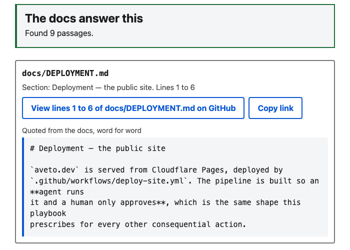
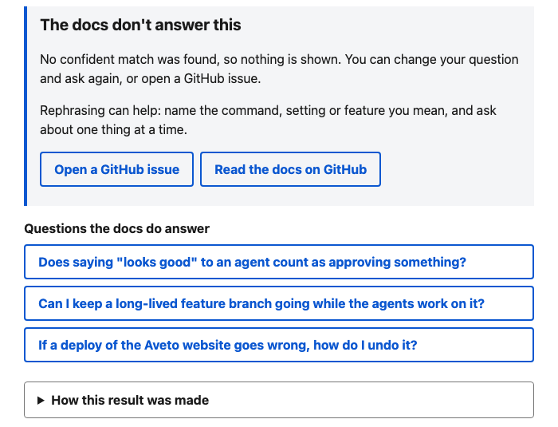

Agentic engineering you can verify.
From spec to reviewed pull request, with the record. Aveto turns a paragraph into a tested, security-reviewed pull request, run by 28 specialist agents in your own Claude Code session on the plan you already pay for. You approve one Charter at the start and review the result at the end.
$node execution/install.mjs <your-repo>
Intake, scope, architecture, implementation, independent QA and security review.
Plan, validate, then deploy to Azure, AWS or GCP — validation never self-certified.
Production verification, auto-rollback on regression, on-call and customer response.
What you can do
StreakKeeper was built from a one-paragraph brief, from discovery through a tested, shipped service, with every stage independently reviewed. Shown once. One small app.
Every run ends in a pull request after independent QA, a security pass and a release gate. Seven traced slices across two apps, and nine more on a third built in public. Shown repeatedly. The merge stays yours.
Our own support agent’s judge refused 24 of 24 questions the docs do not answer and kept 16 of 19 that they do, on a set it had never seen. Four earlier checks failed and are on the record. It now runs as a live public service: scored once on 20 new questions it refused all 10 it should and kept 8 of 10 answerable. Shown twice, narrowly: both second bars were passed with no margin (by one question, then exactly at the bar).
You approve one Charter by its hash, get a notice at each stage, and review at the end. Nothing outside the Charter happens without asking. Shown twice. A person still starts each run.
Review mode reads and reports and changes nothing, with its success bars declared before any run. Planned, not built.
Try it
The support agent Aveto built about itself, running on Azure. It answers with passages copied word for word from these docs, with file and line numbers, or says the docs do not answer. A model only decides whether the passages answer. Nothing on the page is written by one.
The first load after a quiet spell takes about half a minute.
Click one of the first three suggestions. You get quoted passages, each with its file and lines.
Click “Does it support right-to-left languages?” The app says so instead of guessing.


Screenshots of the live app taken on 2026-10-27.
Unanswerable or tricky questions refused with no passage, on 20 questions it had not seen.
The full result is publicAnswerable questions that got a passage from a listed source. Exactly the bar, with no margin.
Two got “no confident match”Tests pass (668 before). No serious accessibility issue on five views. Touch devices not tested.
Its Charter and record are publicFirst load after idle. A warm answer took about 1.4 s (median of six), a question about $0.0086, and a rehearsed rollback served again in about 65 s.
Scorecard: counts are raw totals since the last restart, never what was askedBuilt by Aveto, in public, under a Charter one person approved by its hash, including the three accounting flaws found after launch. The record is in aveto-support. Every run, read from its own records.
Why now
An agent writes the feature in minutes. What it cannot do alone is everything that makes the feature safe to ship — the architecture review, the verification by someone who didn't write it, the security pass, the release gate. That process is what separates a demo from production, it lives inside large engineering orgs, and it never shipped with the models.
of developers say they do not fully trust AI-generated code to be functionally correct.
Developer survey, 2026of AI-written code clears review unmodified — against 84% for the code a person wrote.
Industry analysis, 2026of AI-written changes still require manual debugging in production — after passing QA and staging.
Survey of 100 engineering directors and VPs, 2026of agent pilots never reach production at all. The gap is rarely the model — it is everything between a working demo and a change someone will sign.
Industry analysis, 2026The team
One agent asked to build a product makes every decision from the same context, with the same blind spots. Aveto splits the work the way a large engineering org does — every role is a written brief with its own scope, its own tools, and one artefact it must hand to the next. This is the org chart, and it ships in the repo.
Shape the work6 roles
Design and build7 roles
Verify — none of these wrote the code5 roles
Ship it3 roles
Run it — the part most tools skip7 roles
From the course to your repo
Anthropic’s AI-Native SDLC Playbook walks through six stages in about an hour: plan, design, build, test, deploy, maintain. It teaches the practice. Aveto is that practice as software — one install puts every stage into your repo, with its roles, its gates and its record, on the Claude Code subscription you already have.
intent.md.intent.md, as a one-page template. Give Aveto a one-line ask and it drafts the file for you, marking every guess as (inferred) until you confirm it.CLAUDE.md, parallel sessions and subagents.CLAUDE.md and AGENTS.md that run them. The Architect’s plan is on disk before a line of code is written.Course stages summarised from its public outline. Aveto is independent and is not affiliated with or endorsed by Anthropic.
How it works
Not guardrail text an agent is asked politely to follow. Structural properties of the lifecycle, each producing an artifact you can hand to someone who wasn't there.
Intake checks a request against your recorded safety invariants and blocks a conflict, naming it and offering a safe reframe. Given a request to auto-purge user data with no confirmation, a run stopped before any code was written.
QA, security and the release gate are separate roles from the one that wrote the code, and a deploy agent cannot mark its own plan validated.
One test, so an example and not a rate: in a spike on a copy of the support agent, a second model’s blind review found a planted bug that a review by the same model family missed.
Each run keeps its Charter hash, who approved it and when, its spend against a hard cap, and a hash-chained event log. Every run is listed, including what its records leave out.
What it runs on
Aveto builds on the coding agent plan you already have. The product it builds pays for its own model calls, and you approve those in the Charter.
The span
Spec-driven tools end when code lands. Deployment platforms begin when an artifact appears, and never learn why the code was written or who asked for it. Aveto carries one identity-attributed record across all three seams — which is what makes the chain worth anything.
Aveto doesn't rebuild your deployment engine — it wraps the one you already trust. Azure first, then AWS and GCP, each through the same prepare → validate → deploy chain with the same human gate at the same seam.
What travels between clouds isn't the infrastructure code. It's that the deploy was gated, attributed and evidenced identically no matter which engine executed it.
Production verification checks the live service against the safety invariants the spec actually named — not just a health ping — and on a bad signal executes the rollback plan that was approved when the spec was reviewed.
On-call diagnoses read-only and returns code fixes as new slices through the same gates. Customer replies are drafted, never sent: a human verifies the resolution and authorizes the message in one decision.
Evidence
Slices carried to merged pull requests on a reference app, a second app built from a one-paragraph brief, and a security gate that stopped its own release.
Runs recorded for the support agent, each with its Charter hash, spend and review. Some records leave things out, and the page says which.
aveto.dev/runs, read from the run recordsTests pass on the latest run (668 two runs before), with the new tests failing on the old code first.
runs/result-page-clarity, test count recordFor a rehearsed rollback to serve the previous version again. One sample, run before release.
runs/result-page-clarity, rollback rehearsalPull requests reviewed blind by a second model. The trial plans five, so the result is provisional.
docs/review-trial, four recordsSecurity review found a finished slice listening on every network interface, proved it across the LAN, and sent the work back. The same flaw was then fixed in the older app it came from.
Shown an unsafe ask, it refused at intake. Shown an impossible one, it bounded the failure and escalated without weakening a gate.
Four pre-registered checks on the support agent failed and were recorded as results. A later judge then refused 24 of 24 unanswerable questions and kept 16 of 19 answerable ones, passing the second bar by one question.
A real run landed a tier 3 gate and opened a pull request after one typed message. Its own code review caught the run’s permission rules about to ship in a tracked file.
The record
Every standard below asks a version of the same question — who authorized this, what did the system decide, and was that consistent with policy. Aveto's artifacts answer it by construction, because they were produced at the moment the decision was made rather than reconstructed afterwards.
Who it's for
Not everyone needs this. The people who do have one thing in common: the software matters, and there is nobody else standing between a mistake and production.
You are the architect, the reviewer and the on-call. Aveto is the colleagues you would have had at a company ten times the size.
Trigger · the first paying customerYou know exactly what a real review process looks like. You just don't work somewhere that runs one.
Trigger · the change you can't get wrongShipping faster than anyone can still keep the whole system in their head, and feeling the first things slip through.
Trigger · the first production incidentWhat it has built
Honest limits
The validation matrix in the repo lists what isn't proven, so this page does too. A product built on refusing unsound work cannot oversell itself and still mean it.
A slice runs four to ten stages at roughly 70k–130k tokens each; a full greenfield build measured 947k. That is the price of every stage forming its own independent judgement — and exactly why the pipeline checks a budget before each step rather than reporting the damage after.
Running a one-line fix through nine gated stages is theatre. The Engineering Manager compresses the pipeline for small slices and records why. Reach for the full chain where being wrong is expensive, not by default.
Per-role tool restrictions are generated correctly, but only take effect when the orchestrator session runs inside the product repo. Run it from elsewhere and you get capable agents with unrestricted tools. Documented rather than buried.
Production SLOs, enterprise multi-tenancy, and a real model running unattended at scale. What has now run: real deploys of the support service to Azure, in two Charter runs (the Orchestrator ran the commands, because the deploy role has no shell), a live smoke test, and a production-verification stage that read the saved results. A real model decides, one question at a time, inside that live public feature, behind a $10 monthly limit. Each open item is listed in the validation matrix — none are claimed here.
Process v2 has four runs behind it, one tiny and three real, and each needed the owner for something beyond the first Charter approval: a message, a credential step, a permission prompt or a usage limit. Both of the judge’s gates were passed with no margin (by one question, then exactly at the bar), and retrieval itself finds the right file for 79.2% of answerable questions, just under its own bar. The service uses Anthropic’s API under its commercial terms, which incorporate a data-processing addendum by reference; no agent read that text, and the page asks visitors not to enter personal information. Its spend limits reset when the service restarts, so the $10 monthly limit is the only lasting cap. A person still starts each run and decides the merge. Review mode for an existing codebase is planned, not built.
Common questions
No. Aveto directs the agents you already use rather than replacing them. It sits a layer above the worker; today that worker is Claude Code.
No. You approve one Charter at the start: the models, data processors, safety-control changes, permissions, budget and end actions the run may use, approved by its hash. The run is built to ask nothing after that; it stops only for an action the Charter does not name, for spend past its hard cap, or for a credential. At the end you review what was done under each line. The default Charter allows no merge, no deploy and no send: a run ends with a pull request for you. An approval typed in another session does not count, and an agent’s review is never a person’s approval. Seven runs have used a Charter (five on the support agent, two on a small test app); early ones still stopped to ask about a budget set against the wrong limit, which the latest pack fixed.
Yes, as a layer around the review Claude Code already provides, not a new reviewer. Every Charter run reviews its own diff with a reviewer that did not write it, sets a risk tier (safety text, permissions, hooks and CI are always high), limits fix-and-review rounds to three, and records each finding as fixed, rejected or intentional. The playbook is docs/CODE_REVIEW.md.
Because it changes who carries the cost. Aveto never resells inference: it runs on the Claude Code plan you already pay for, so it adds no separate API bill. The scarce resource is that plan’s usage window, and a long run counts against it, which is why every stage is costed before it spends and written to disk as it goes. What it runs on, part by part, is in the table above.
Not yet. Aveto’s run rules live in an AGENTS.md file that tools such as Codex, Cursor and Copilot can read, but the agents, hooks and commands that enforce them are built for Claude Code only. A second adapter is on the backlog and starts when there is a real need. Codex is used today only as an optional, manual second reviewer.
No. The live chat is a small app Aveto built. It finds passages in the docs, one model call decides whether they answer the question, and it shows the passages word for word or says the docs do not answer. It never writes text of its own and takes no actions. What is autonomous is the build: agents built and released it under a Charter anyone can read.
Scoped credentials answer a different question: what an agent is able to touch. They say nothing about whether a particular action was authorized, or what was left behind. In an access log, a deploy a named human approved and a deploy nobody saw look identical, because both were permitted. Permission is a capability boundary; accountability is a record of who decided, when, and against which rule. Aveto assumes your credential scoping is already correct and adds the record on top.
They sit at different layers. Spec-driven tools structure how software gets written, and toolkits such as ECC make an agent work better with libraries of skills, hooks and memory. Aveto governs whether the work can be trusted: every stage is costed before it spends, the agent that verifies never wrote the code, gates fail closed, and a named human approves one Charter by its hash and reviews the result. The trade is breadth: Aveto is narrower, Claude Code only, built for one person on one subscription. It can be used alongside the others. Aveto is independent and not affiliated with ECC or Anthropic.
Today it is built for one person on one subscription, and that is where it is proven. Each developer running their own slices on their own subscription works now. Shared gates across a team, a run inventory spanning developers, and the conformity export an auditor asks for are on the roadmap, not shipped; a read-only page of every run exists at /runs. The validation matrix in the repo marks exactly what has and hasn’t been run at that scale.
Azure is the one proven end to end: the live demo runs on it, deployed by an Aveto run. AWS and GCP are planned, not tested. Each would wrap the deployment engine you already use rather than replacing it.
Production verification checks the live service against the invariants the spec named, and the rollback plan approved at spec review is the one that runs, with no second approval round trip because that decision was already made. In the last two releases the rollback was rehearsed before release: the previous version served again about 65 to 70 seconds after the command, then the new version was restored. That is two samples, not a guarantee.
The documents
There is no hidden implementation. The specs below are the system — agents are generated from these files and the gates are enforced from them. Read the rules before trusting the claims.
Aveto is open. Point the installer at a repo and it writes one least-privilege agent per role, the gates, and the commands to run a slice — on the Claude Code subscription you already have.